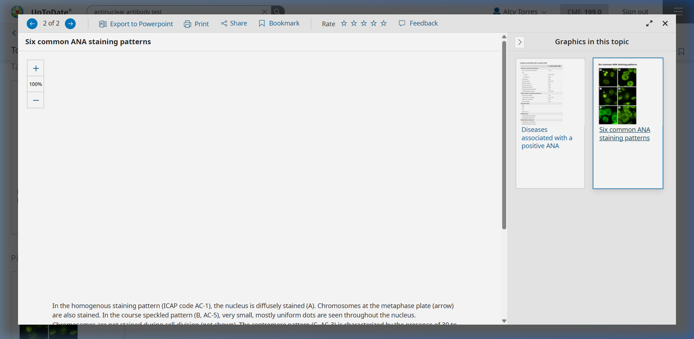
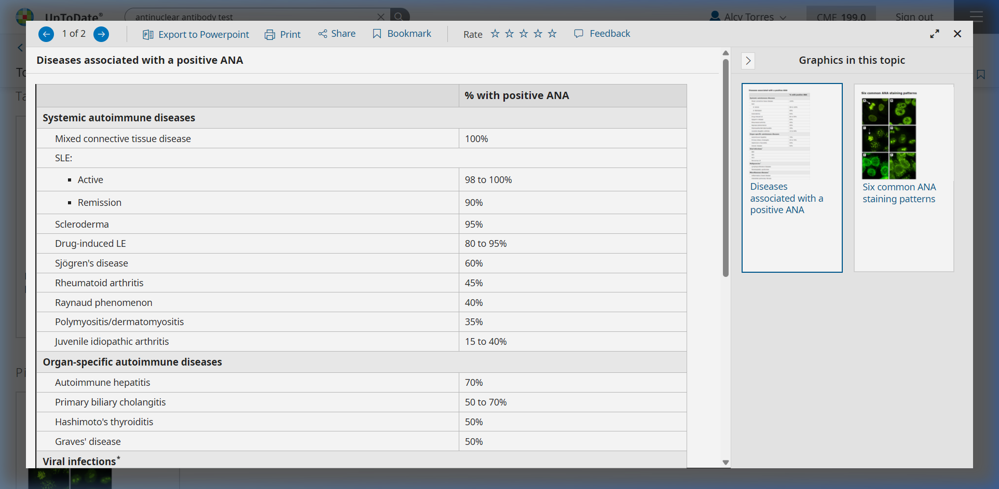

<!DOCTYPE html>
<html lang="es">
<head>
    <meta charset="UTF-8">
    <meta name="viewport" content="width=device-width, initial-scale=1.0">
    <title>PowerSemiotics - Laboratorio de Inmunología</title>
    
    <!-- Tailwind CSS -->
    <script src="https://cdn.tailwindcss.com"></script>
    
    <!-- React & ReactDOM -->
    <script crossorigin src="https://unpkg.com/react@18/umd/react.production.min.js"></script>
    <script crossorigin src="https://unpkg.com/react-dom@18/umd/react-dom.production.min.js"></script>
    
    <!-- Babel para JSX -->
    <script src="https://unpkg.com/@babel/standalone/babel.min.js"></script>

    <style>
        @import url('https://fonts.googleapis.com/css2?family=Inter:wght@300;400;500;600;700&display=swap');
        @import url('https://fonts.googleapis.com/css2?family=Courier+Prime:wght@400;700&display=swap'); /* Para reportes de lab */
        
        body {
            font-family: 'Inter', sans-serif;
            background-color: #faf5ff; /* Tono violeta muy suave */
        }
        .font-mono-lab {
            font-family: 'Courier Prime', monospace;
        }
        .animate-fade-in {
            animation: fadeIn 0.4s ease-out forwards;
        }
        @keyframes fadeIn {
            from { opacity: 0; transform: translateY(10px); }
            to { opacity: 1; transform: translateY(0); }
        }
        .custom-scrollbar::-webkit-scrollbar {
            height: 6px;
        }
        .custom-scrollbar::-webkit-scrollbar-track {
            background: #f3e8ff; 
        }
        .custom-scrollbar::-webkit-scrollbar-thumb {
            background: #a855f7; 
            border-radius: 10px;
        }

        /* Utilidades para Flashcards 3D */
        .perspective-1000 {
            perspective: 1000px;
        }
        .transform-style-3d {
            transform-style: preserve-3d;
        }
        .backface-hidden {
            backface-visibility: hidden;
        }
        .rotate-y-180 {
            transform: rotateY(180deg);
        }
    </style>
</head>
<body>
    <div id="root"></div>

    <script type="text/babel">
        const { useState } = React;

        // --- ICONOS SVG ---
        const Icons = {
            Microscope: () => <svg xmlns="http://www.w3.org/2000/svg" width="20" height="20" viewBox="0 0 24 24" fill="none" stroke="currentColor" strokeWidth="2" strokeLinecap="round" strokeLinejoin="round"><path d="M6 18h8"></path><path d="M3 22h18"></path><path d="M14 22a7 7 0 1 0 0-14h-1"></path><path d="M9 14h2"></path><path d="M9 12a2 2 0 0 1-2-2V6h6v4a2 2 0 0 1-2 2Z"></path><path d="M12 6V3a1 1 0 0 0-1-1H9a1 1 0 0 0-1 1v3"></path></svg>,
            TestTube: () => <svg xmlns="http://www.w3.org/2000/svg" width="20" height="20" viewBox="0 0 24 24" fill="none" stroke="currentColor" strokeWidth="2" strokeLinecap="round" strokeLinejoin="round"><path d="M14.5 2v17.5c0 1.4-1.1 2.5-2.5 2.5h0c-1.4 0-2.5-1.1-2.5-2.5V2"></path><path d="M8.5 2h7"></path><path d="M14.5 16h-5"></path></svg>,
            ClipboardList: () => <svg xmlns="http://www.w3.org/2000/svg" width="20" height="20" viewBox="0 0 24 24" fill="none" stroke="currentColor" strokeWidth="2" strokeLinecap="round" strokeLinejoin="round"><rect x="8" y="2" width="8" height="4" rx="1" ry="1"></rect><path d="M16 4h2a2 2 0 0 1 2 2v14a2 2 0 0 1-2 2H6a2 2 0 0 1-2-2V6a2 2 0 0 1 2-2h2"></path><path d="M12 11h4"></path><path d="M12 16h4"></path><path d="M8 11h.01"></path><path d="M8 16h.01"></path></svg>,
            Target: () => <svg xmlns="http://www.w3.org/2000/svg" width="20" height="20" viewBox="0 0 24 24" fill="none" stroke="currentColor" strokeWidth="2" strokeLinecap="round" strokeLinejoin="round"><circle cx="12" cy="12" r="10"></circle><circle cx="12" cy="12" r="6"></circle><circle cx="12" cy="12" r="2"></circle></svg>,
            Brain: () => <svg xmlns="http://www.w3.org/2000/svg" width="20" height="20" viewBox="0 0 24 24" fill="none" stroke="currentColor" strokeWidth="2" strokeLinecap="round" strokeLinejoin="round"><path d="M9.5 2A2.5 2.5 0 0 1 12 4.5v15a2.5 2.5 0 0 1-4.96.44 2.5 2.5 0 0 1-2.96-3.08 3 3 0 0 1-.34-5.58 2.5 2.5 0 0 1 1.32-4.24 2.5 2.5 0 0 1 1.98-3A2.5 2.5 0 0 1 9.5 2Z"></path><path d="M14.5 2A2.5 2.5 0 0 0 12 4.5v15a2.5 2.5 0 0 0 4.96.44 2.5 2.5 0 0 0 2.96-3.08 3 3 0 0 0 .34-5.58 2.5 2.5 0 0 0-1.32-4.24 2.5 2.5 0 0 0-1.98-3A2.5 2.5 0 0 0 14.5 2Z"></path></svg>,
            RefreshCw: () => <svg xmlns="http://www.w3.org/2000/svg" width="20" height="20" viewBox="0 0 24 24" fill="none" stroke="currentColor" strokeWidth="2" strokeLinecap="round" strokeLinejoin="round"><path d="M3 12a9 9 0 1 0 9-9 9.75 9.75 0 0 0-6.74 2.74L3 8"></path><path d="M3 3v5h5"></path></svg>,
            CheckCircle: () => <svg xmlns="http://www.w3.org/2000/svg" width="24" height="24" viewBox="0 0 24 24" fill="none" stroke="#10b981" strokeWidth="2" strokeLinecap="round" strokeLinejoin="round"><path d="M22 11.08V12a10 10 0 1 1-5.93-9.14"></path><polyline points="22 4 12 14.01 9 11.01"></polyline></svg>,
            XCircle: () => <svg xmlns="http://www.w3.org/2000/svg" width="24" height="24" viewBox="0 0 24 24" fill="none" stroke="#ef4444" strokeWidth="2" strokeLinecap="round" strokeLinejoin="round"><circle cx="12" cy="12" r="10"></circle><line x1="15" y1="9" x2="9" y2="15"></line><line x1="9" y1="9" x2="15" y2="15"></line></svg>
        };

        // --- COMPONENTES DE VISTA ---

        // 1. Hub: Patrones ANA
        const AnaPatterns = () => (
            <div className="animate-fade-in space-y-6">
                <div className="bg-white p-6 rounded-xl shadow-sm border border-purple-100 border-t-4 border-t-purple-600">
                    <h2 className="text-2xl font-bold text-slate-800 mb-4 flex items-center gap-2">
                        <Icons.Microscope /> Anticuerpos Antinucleares (ANA)
                    </h2>
                    <p className="text-slate-600 mb-4 leading-relaxed">
                        Los ANA son la prueba de tamizaje (screening) inicial para enfermedades reumatológicas sistémicas. Son <strong>altamente sensibles</strong> (raro tener Lupus con ANA negativo), pero <strong>poco específicos</strong> (personas sanas, infecciones o fármacos pueden positivizarlos). Se miden por Inmunofluorescencia Indirecta (IFI).
                    </p>
                    
                    <div className="bg-amber-50 border-l-4 border-amber-500 p-4 mb-4 rounded-r-lg text-sm text-amber-900 shadow-sm">
                        <div className="mb-2"><strong className="text-amber-950 uppercase tracking-wide text-xs">UptoDate Clinical Pearl: ¿Cuándo testear?</strong></div>
                        Las pruebas ANA deben ordenarse <strong>solo si hay alta probabilidad pre-test</strong> de enfermedad reumática (ej. rash malar, sinovitis clínica, Raynaud). El cribado rutinario para fatiga crónica o dolores inespecíficos genera alta tasa de <strong>falsos positivos</strong>.
                    </div>
                    
                    <div className="bg-emerald-50 border-l-4 border-emerald-500 p-4 mb-6 rounded-r-lg text-sm text-emerald-900 shadow-sm">
                        <div className="mb-2"><strong className="text-emerald-950 uppercase tracking-wide text-xs">Perla de Patrón: DFS70</strong></div>
                        El Patrón Moteado Fino Denso aislado (DFS70) es frecuentemente encontrado en <strong>personas sanas</strong>. Su presencia asilada brinda tranquilidad, ya que es excepcionalmente raro en Enfermedades Reumatológicas Sistémicas severas.
                    </div>

                    <div className="mb-6 rounded-lg overflow-hidden border border-slate-200 shadow-sm">
                        
                        <div className="bg-slate-50 border-t border-slate-200 p-2 text-xs text-slate-500 text-center font-semibold">Fuente: UpToDate (Múltiples vistas de patrones IFI)</div>
                    </div>

                    <h3 className="text-xl font-bold text-purple-900 mb-4">Patrones Clásicos de Inmunofluorescencia</h3>
                    <div className="grid grid-cols-1 md:grid-cols-2 gap-4">
                        {/* Homogéneo */}
                        <div className="border border-slate-200 rounded-lg p-4 hover:border-purple-400 transition-colors bg-purple-50/30">
                            <h4 className="font-bold text-purple-800 mb-2 flex items-center gap-2">
                                <div className="w-4 h-4 rounded-full bg-purple-600"></div> Homogéneo
                            </h4>
                            <p className="text-sm text-slate-700 mb-2">Tinción uniforme de todo el núcleo. Se asocia a anticuerpos dirigidos contra la cromatina y las histonas.</p>
                            <p className="text-sm font-semibold text-slate-900">Asociación Clínica:</p>
                            <ul className="list-disc pl-5 text-sm text-slate-600">
                                <li>Lupus Eritematoso Sistémico (LES).</li>
                                <li>Lupus Inducido por Fármacos (anti-Histonas).</li>
                            </ul>
                        </div>
                        {/* Moteado */}
                        <div className="border border-slate-200 rounded-lg p-4 hover:border-purple-400 transition-colors bg-purple-50/30">
                            <h4 className="font-bold text-purple-800 mb-2 flex items-center gap-2">
                                <div className="w-4 h-4 rounded-full bg-purple-600" style={{backgroundImage: 'radial-gradient(circle, white 20%, transparent 20%)', backgroundSize: '4px 4px'}}></div> Moteado (Speckled)
                            </h4>
                            <p className="text-sm text-slate-700 mb-2">Punteado fino o grueso en el núcleo. El más frecuente y menos específico.</p>
                            <p className="text-sm font-semibold text-slate-900">Asociación Clínica:</p>
                            <ul className="list-disc pl-5 text-sm text-slate-600">
                                <li>Síndrome de Sjögren (anti-Ro/SSA, anti-La/SSB).</li>
                                <li>Enf. Mixta del Tejido Conectivo (anti-U1 RNP).</li>
                                <li>Lupus (anti-Sm).</li>
                            </ul>
                        </div>
                        {/* Centromérico */}
                        <div className="border border-slate-200 rounded-lg p-4 hover:border-purple-400 transition-colors bg-purple-50/30">
                            <h4 className="font-bold text-purple-800 mb-2 flex items-center gap-2">
                                <div className="w-4 h-4 rounded-full bg-slate-200 flex items-center justify-center"><div className="w-1 h-1 bg-purple-800 rounded-full"></div></div> Centromérico
                            </h4>
                            <p className="text-sm text-slate-700 mb-2">Tinción de 46 puntos aislados correspondientes a los centrómeros de los cromosomas (CENP-B).</p>
                            <p className="text-sm font-semibold text-slate-900">Asociación Clínica:</p>
                            <ul className="list-disc pl-5 text-sm text-slate-600">
                                <li>Esclerosis Sistémica Limitada (Síndrome CREST).</li>
                                <li>Cirrosis Biliar Primaria (CBP).</li>
                            </ul>
                        </div>
                        {/* Nucleolar */}
                        <div className="border border-slate-200 rounded-lg p-4 hover:border-purple-400 transition-colors bg-purple-50/30">
                            <h4 className="font-bold text-purple-800 mb-2 flex items-center gap-2">
                                <div className="w-4 h-4 rounded-full bg-slate-200 flex items-center justify-center"><div className="w-2 h-2 bg-purple-600 rounded-full"></div></div> Nucleolar
                            </h4>
                            <p className="text-sm text-slate-700 mb-2">Tinción homogénea solo de los nucléolos (2 a 6 por núcleo).</p>
                            <p className="text-sm font-semibold text-slate-900">Asociación Clínica:</p>
                            <ul className="list-disc pl-5 text-sm text-slate-600">
                                <li>Esclerosis Sistémica Difusa (anti-Scl-70).</li>
                            </ul>
                        </div>
                    </div>
                </div>
            </div>
        );

        // 2. Tabla de Anticuerpos Específicos
        const AutoantibodyTable = () => {
            return (
                <div className="animate-fade-in bg-white p-6 rounded-xl shadow-sm border border-slate-200">
                    <div className="flex justify-between items-center mb-6">
                        <h2 className="text-2xl font-bold text-slate-800 flex items-center gap-2">
                            <Icons.Target /> Panel de Autoinmunidad
                        </h2>
                        <span className="bg-purple-100 text-purple-800 text-xs font-bold px-3 py-1 rounded-full uppercase">Alto Rendimiento USMLE</span>
                    </div>

                    <div className="mb-6 rounded-lg overflow-hidden border border-slate-200 shadow-sm">
                        
                        <div className="bg-slate-50 border-t border-slate-200 p-2 text-xs text-slate-500 text-center font-semibold">Fuente: UpToDate (Enfermedades asociadas a un ANA positivo)</div>
                    </div>
                    
                    <p className="text-slate-600 mb-6">
                        Correlación de autoanticuerpos de alta especificidad con base en datos de UpToDate.
                    </p>

                    <div className="overflow-x-auto custom-scrollbar pb-4">
                        <table className="w-full text-left border-collapse min-w-[800px]">
                            <thead>
                                <tr className="bg-purple-900 text-white">
                                    <th className="p-3 font-bold rounded-tl-lg w-1/4">Anticuerpo (ENA/DNA)</th>
                                    <th className="p-3 font-bold w-1/3">Enfermedad Primaria</th>
                                    <th className="p-3 font-bold rounded-tr-lg">Perla Clínica / Alto Rendimiento</th>
                                </tr>
                            </thead>
                            <tbody className="text-sm">
                                {/* LES */}
                                <tr className="border-b border-purple-100 hover:bg-purple-50">
                                    <td className="p-3 font-bold text-purple-800 bg-purple-50/50">Anti-dsDNA (ADN bicatenario)</td>
                                    <td className="p-3 text-slate-800 font-semibold">Lupus Eritematoso Sistémico (LES)</td>
                                    <td className="p-3 text-slate-600">Sensibilidad ~60%, Especificidad &gt;95%. Sus títulos varían y se correlacionan con <strong>Nefritis Lúpica</strong> y actividad de la enfermedad.</td>
                                </tr>
                                <tr className="border-b border-purple-100 hover:bg-purple-50">
                                    <td className="p-3 font-bold text-purple-800 bg-purple-50/50">Anti-Sm (Smith)</td>
                                    <td className="p-3 text-slate-800">LES</td>
                                    <td className="p-3 text-slate-600">El anticuerpo <strong>más específico</strong> para LES (&gt;99%), pero pobre sensibilidad (20-30%). Sus niveles no se correlacionan con la actividad clínica.</td>
                                </tr>
                                <tr className="border-b border-purple-100 hover:bg-purple-50">
                                    <td className="p-3 font-bold text-purple-800 bg-purple-50/50">Anti-Histonas</td>
                                    <td className="p-3 text-slate-800 font-semibold">Lupus Inducido por Fármacos</td>
                                    <td className="p-3 text-slate-600">Presente en &gt;95% de los casos. Clásico post uso de <strong>Hidralazina, Procainamida o Isoniazida</strong>.</td>
                                </tr>
                                {/* MCTD & Sjögren */}
                                <tr className="border-b border-purple-100 hover:bg-purple-50">
                                    <td className="p-3 font-bold text-teal-700 bg-teal-50/50">Anti-U1 RNP</td>
                                    <td className="p-3 text-slate-800 font-semibold">Enfermedad Mixta del Tejido Conectivo (EMTC)</td>
                                    <td className="p-3 text-slate-600">Su presencia a altos títulos es <strong>obligatoria</strong> para el diagnóstico (Sensibilidad 100%).</td>
                                </tr>
                                <tr className="border-b border-purple-100 hover:bg-purple-50">
                                    <td className="p-3 font-bold text-teal-700 bg-teal-50/50">Anti-Ro (SSA) y Anti-La (SSB)</td>
                                    <td className="p-3 text-slate-800">Síndrome de Sjögren / LES</td>
                                    <td className="p-3 text-slate-600">Altamente predictivos del <strong>Lupus Neonatal</strong> y bloqueo auriculoventricular congénito si la madre embarazada es positiva.</td>
                                </tr>
                                {/* Sclerosis y Miositis */}
                                <tr className="border-b border-purple-100 hover:bg-purple-50">
                                    <td className="p-3 font-bold text-amber-700 bg-amber-50/50">Anti-Scl-70 (Topoisomerasa I)</td>
                                    <td className="p-3 text-slate-800 font-semibold">Esclerosis Sistémica Difusa</td>
                                    <td className="p-3 text-slate-600">Acarrea un riesgo muy alto de desarrollo de <strong>Enfermedad Pulmonar Intersticial (ILD)</strong>.</td>
                                </tr>
                                <tr className="border-b border-purple-100 hover:bg-purple-50">
                                    <td className="p-3 font-bold text-amber-700 bg-amber-50/50">Anti-Centrómero</td>
                                    <td className="p-3 text-slate-800 font-semibold">Esclerosis Sistémica Limitada (CREST)</td>
                                    <td className="p-3 text-slate-600">Fuertemente asociado a la aparición tardía de <strong>Hipertensión Arterial Pulmonar (PAH)</strong>.</td>
                                </tr>
                                <tr className="hover:bg-purple-50">
                                    <td className="p-3 font-bold text-amber-700 bg-amber-50/50 rounded-bl-lg">Anti-Jo-1 (Antisintetasa)</td>
                                    <td className="p-3 text-slate-800">Polimiositis / Dermatomiositis</td>
                                    <td className="p-3 text-slate-600">Asociado a disnea progresiva (Neumopatía Intersticial) y manos hiperqueratósicas ("Manos de Mecánico").</td>
                                </tr>
                            </tbody>
                        </table>
                    </div>
                </div>
            );
        };

        // 3. Flashcards Gamificadas (USMLE)
        const Flashcards = () => {
            const [currentIndex, setCurrentIndex] = useState(0);
            const [isFlipped, setIsFlipped] = useState(false);

            const cards = [
                {
                    id: 1,
                    front: "Paciente con debilidad muscular proximal severa. Al examen físico sus dedos presentan fisuras hiperqueratósicas y engrosamento bilateral (Manos de Mecánico). Inicia tos seca progresiva. ¿Qué anticuerpo esperas encontrar y a qué síndrome corresponde?",
                    back: "Anticuerpo: Anti-Jo-1.\n\nSíndrome: Síndrome Antisintetasa (una variante de la Polimiositis/Dermatomiositis). La tos se debe a Neumopatía Intersticial difusa fuertemente asociada.",
                    tag: "Reumatología Repaso"
                },
                {
                    id: 2,
                    front: "Mujer de 38 años presenta fenómeno de Raynaud, dificultad para deglutir (motilidad esofágica alterada) y piel tensa/endurecida estrictamente limitada a la cara y las manos (distal al codo). ¿Qué anticuerpo está asociado y cuál es su principal riesgo letal?",
                    back: "Anticuerpo: Anti-Centrómero.\n\nEnfermedad: Esclerosis Sistémica Limitada (Síndrome CREST).\nRiesgo Letal asociado: Hipertensión Arterial Pulmonar (PAH).",
                    tag: "Esclerosis"
                },
                {
                    id: 3,
                    front: "Un paciente joven sin síntomas clínicos es sometido a un panel ANA 'de rutina' por fatiga laboral. El resultado es positivo 1:160 con patrón DFS70 (Dense Fine Speckled aisaldo). ¿Conducta diagnóstica?",
                    back: "Tranquilizar al paciente.\n\nPerla: El patrón DFS70 de forma aislada se asocia frecuentemente a individuos asintomáticos y tiene un inmenso Valor Predictivo Negativo para descartar enfermedad reumática sistémica grave.",
                    tag: "Laboratorio Clínico"
                }
            ];

            const flipCard = () => setIsFlipped(!isFlipped);
            
            const nextCard = () => {
                setIsFlipped(false);
                setTimeout(() => {
                    setCurrentIndex((prev) => (prev + 1) % cards.length);
                }, 150); // Pequeño delay visual para que gire devuelta primero
            };

            const prevCard = () => {
                setIsFlipped(false);
                setTimeout(() => {
                    setCurrentIndex((prev) => (prev === 0 ? cards.length - 1 : prev - 1));
                }, 150);
            };

            return (
                <div className="animate-fade-in bg-slate-900 border border-slate-800 p-8 rounded-2xl flex flex-col items-center">
                    <div className="w-full flex justify-between items-center mb-8">
                        <h2 className="text-2xl font-bold text-white flex items-center gap-2">
                            <Icons.Brain /> USMLE Active Recall
                        </h2>
                        <span className="bg-purple-600 text-white text-xs font-bold px-3 py-1 rounded-full uppercase tracking-wider">
                            {currentIndex + 1} / {cards.length}
                        </span>
                    </div>

                    {/* Escena 3D de la Flashcard */}
                    <div className="w-full max-w-xl aspect-[4/3] perspective-1000 mb-8 cursor-pointer" onClick={flipCard}>
                        {/* Contenedor Giratorio */}
                        <div className={`relative w-full h-full duration-500 transform-style-3d ${isFlipped ? 'rotate-y-180' : ''}`}>
                            
                            {/* Cara Frontal */}
                            <div className="absolute w-full h-full backface-hidden bg-white text-slate-800 rounded-2xl shadow-[0_0_25px_rgba(168,85,247,0.3)] border-2 border-purple-200 p-8 flex flex-col justify-center text-center">
                                <span className="absolute top-4 left-4 text-xs font-bold text-slate-400 uppercase tracking-widest">Pregunta</span>
                                <p className="text-lg md:text-xl font-medium leading-relaxed">
                                    {cards[currentIndex].front}
                                </p>
                                <div className="absolute bottom-4 left-0 right-0 flex justify-center text-purple-400 opacity-60">
                                    <Icons.RefreshCw />
                                </div>
                            </div>

                            {/* Cara Trasera */}
                            <div className="absolute w-full h-full backface-hidden bg-purple-900 text-white rounded-2xl shadow-[0_0_25px_rgba(168,85,247,0.5)] border-2 border-purple-400 p-8 flex flex-col justify-center text-center rotate-y-180">
                                <span className="absolute top-4 left-4 text-xs font-bold text-fuchsia-300 uppercase tracking-widest">Respuesta</span>
                                <div className="text-lg md:text-xl leading-relaxed whitespace-pre-line">
                                    {cards[currentIndex].back}
                                </div>
                                <div className="absolute bottom-4 right-4 bg-purple-800 px-3 py-1 rounded-full text-xs font-semibold text-purple-300 border border-purple-500">
                                    {cards[currentIndex].tag}
                                </div>
                            </div>

                        </div>
                    </div>

                    <div className="flex gap-4">
                        <button onClick={prevCard} className="px-6 py-2 rounded-full border border-slate-600 text-slate-300 hover:bg-slate-800 transition-colors">
                            &larr; Anterior
                        </button>
                        <button onClick={nextCard} className="px-6 py-2 rounded-full border border-slate-600 text-slate-300 hover:bg-slate-800 transition-colors">
                            Siguiente &rarr;
                        </button>
                    </div>
                </div>
            );
        };

        // 4. Simulador Gamificado: El Patólogo Clínico
        const LabSimulator = () => {
            const [currentCase, setCurrentCase] = useState(0);
            const [feedback, setFeedback] = useState(null);
            const [score, setScore] = useState(0);

            const cases = [
                {
                    id: 1,
                    patient: "Mujer, 26 años",
                    clinic: "Consulta por dolor articular en manos (simétrico), fiebre intermitente y eritema facial que empeora con el sol. Proteinuria ++ en examen físico de orina.",
                    labReport: [
                        "HEMOGRAMA: Leucopenia (3000/mm3)",
                        "ANA (IFI): Positivo, Título 1:640, Patrón Homogéneo",
                        "Factor Reumatoide: Negativo"
                    ],
                    question: "Según el patrón de ANA y la clínica, ¿qué prueba específica confirmaría el diagnóstico y evaluaría el riesgo de compromiso renal severo?",
                    options: [
                        { id: 'ccp', label: 'Anti-CCP' },
                        { id: 'dsdna', label: 'Anti-dsDNA (Anti-ADN de doble cadena)' },
                        { id: 'scl70', label: 'Anti-Scl-70' }
                    ],
                    correct: 'dsdna',
                    explanation: "Correcto. La clínica (eritema malar, nefritis lúpica) y el patrón homogéneo alto apuntan a Lupus Eritematoso Sistémico (LES). El Anti-dsDNA es altamente específico para LES y sus títulos se correlacionan con la actividad de la nefritis lúpica."
                },
                {
                    id: 2,
                    patient: "Hombre, 55 años",
                    clinic: "Refiere sinusitis crónica resistente a antibióticos desde hace 6 meses. Recientemente tosió sangre (hemoptisis) y notó orina oscura (hematuria).",
                    labReport: [
                        "BUN: 45 mg/dL, Creatinina: 2.5 mg/dL",
                        "ANA (IFI): Negativo",
                        "INMUNOLOGÍA VASCULAR: Pendiente"
                    ],
                    question: "¿Qué autanticuerpo (no-ANA) es patognomónico y marcador sérico ideal para este diagnóstico sistémico?",
                    options: [
                        { id: 'canca', label: 'c-ANCA (Anticuerpos anti-Proteinasa 3)' },
                        { id: 'panca', label: 'p-ANCA (Anticuerpos anti-Mieloperoxidasa)' },
                        { id: 'ro', label: 'Anti-Ro (SSA)' }
                    ],
                    correct: 'canca',
                    explanation: "Excelente. La tríada clásica de afección de vías aéreas superiores, inferiores (hemoptisis) y glomerulonefritis paucimmune es Granulomatosis con Poliangeítis (Wegener), asociada abrumadoramente a c-ANCA (PR3)."
                },
                {
                    id: 3,
                    patient: "Varón, 60 años",
                    clinic: "Paciente tratado por tuberculosis activa desde hace 4 meses. Relata aparición súbita de fiebre, artralgias persistentes y mialgias generalizadas.",
                    labReport: [
                        "ANA (IFI): Positivo, Título 1:320, Patrón Homogéneo",
                        "Anti-dsDNA: Negativo",
                        "Anti-Sm: Negativo"
                    ],
                    question: "Suponiendo que los síntomas son causados por su medicación antituberculosa (Isoniazida), ¿qué anticuerpo confirmará el diagnóstico toxicológico?",
                    options: [
                        { id: 'u1rnp', label: 'Anti-U1 RNP' },
                        { id: 'centromero', label: 'Anticuerpos Anti-Centrómero' },
                        { id: 'histona', label: 'Anticuerpos Anti-Histonas' }
                    ],
                    correct: 'histona',
                    explanation: "Correcto. Fármacos como la Isoniazida, Hidralazina o Procainamida inducen la formación de Anticuerpos Anti-Histonas (patrón homogéneo) causando un 'Lupus Inducido por Fármacos'. Se caracteriza por la ausencia de daño renal o neurológico clásico (por ello dsDNA es negativo)."
                },
                {
                    id: 4,
                    patient: "Mujer, 42 años",
                    clinic: "Consulta al dentista por caries múltiples recurrentes. Menciona la sensación persistente de 'arena en los ojos' (queratoconjuntivitis).",
                    labReport: [
                        "ANA (IFI): Positivo, Título 1:320, Patrón Moteado",
                        "Biopsia Glándula Salival: Infiltrado linfocítico focal"
                    ],
                    question: "El patrón moteado orienta hacia antígenos nucleares extraíbles (ENA). ¿Qué anticuerpo(s) correlaciona mejor con el diagnóstico primario?",
                    options: [
                        { id: 'sm', label: 'Anti-Sm' },
                        { id: 'rossa', label: 'Anti-Ro (SSA) y Anti-La (SSB)' },
                        { id: 'scl70', label: 'Anti-Scl-70' }
                    ],
                    correct: 'rossa',
                    explanation: "Correcto. El paciente tiene Síndrome de Sjögren primario (xerostomía + xeroftalmía). El diagnóstico serológico fundamental recae en anticuerpos Ro/SSA y La/SSB (los cuales pueden desencadenar un patrón moteado en ANA)."
                },
                {
                    id: 5,
                    patient: "Hombre, 48 años",
                    clinic: "Presenta debilidad severa para trepar escaleras. Físicamente se evidencia engrosamiento y descamación palmar severa bilateral. Informa tos no productiva de nueva aparición.",
                    labReport: [
                        "Creatina Cinasa (CK): 4,500 U/L",
                        "ANA (IFI): Positivo débil, Patrón Moteado",
                        "RX Tórax: Infiltrados reticulares bibasales"
                    ],
                    question: "Acaba de configurar un Síndrome Antisintetasa clínico. ¿Qué anticuerpo es crítico extraer del perfil ENA extendido?",
                    options: [
                        { id: 'jo1', label: 'Anti-Jo-1' },
                        { id: 'dsdna', label: 'Anti-dsDNA' },
                        { id: 'u1rnp', label: 'Anti-U1 RNP' }
                    ],
                    correct: 'jo1',
                    explanation: "Excelente. La tríada de Miopatía inflamatoria, Manos de mecánico (hiperqueratosis) e ILD (Enf. Pulmonar Intersticial manifestada en la radiografía y tos) es clásica del anticuerpo Antisintetasa: Anti-Jo-1."
                }
            ];

            const handleAnswer = (optionId) => {
                if (optionId === cases[currentCase].correct) {
                    setFeedback({ type: 'success', msg: cases[currentCase].explanation });
                    if (!feedback) setScore(score + 1);
                } else {
                    setFeedback({ type: 'error', msg: "Incorrecto. Correlaciona la clínica presentada con las perlas de UpToDate de la tabla teórica." });
                }
            };

            const nextCase = () => {
                setFeedback(null);
                setCurrentCase(prev => prev + 1);
            };

            const resetGame = () => {
                setFeedback(null);
                setCurrentCase(0);
                setScore(0);
            };

            const isFinished = currentCase >= cases.length;

            return (
                <div className="bg-white p-6 rounded-xl shadow-sm border border-slate-200 animate-fade-in">
                    <div className="flex items-center justify-between mb-6 border-b pb-4">
                        <h2 className="text-2xl font-bold text-slate-800 flex items-center gap-2">
                            <Icons.TestTube /> El Patólogo Clínico
                        </h2>
                        <span className="bg-fuchsia-100 text-fuchsia-800 text-xs font-bold px-3 py-1 rounded-full uppercase">Correlación Clínico-Patológica</span>
                    </div>

                    {!isFinished ? (
                        <div className="grid grid-cols-1 lg:grid-cols-2 gap-6">
                            {/* Panel Izquierdo: Caso Clínico y Lab */}
                            <div className="space-y-4">
                                <div className="flex justify-between text-sm font-bold text-slate-500">
                                    <span>Caso {currentCase + 1} de {cases.length}</span>
                                    <span>Puntos: {score}</span>
                                </div>
                                
                                <div className="bg-slate-50 border-l-4 border-slate-500 p-4 rounded-r-lg">
                                    <h3 className="font-bold text-slate-800 mb-1">Motivo de Consulta</h3>
                                    <p className="text-sm text-slate-700"><strong>{cases[currentCase].patient}:</strong> {cases[currentCase].clinic}</p>
                                </div>

                                <div className="bg-[#fdfdfd] border border-slate-300 p-4 rounded shadow-inner font-mono-lab text-sm">
                                    <div className="border-b border-dashed border-slate-400 pb-2 mb-2 flex justify-between text-xs text-slate-500 uppercase">
                                        <span>Hospital Universitario</span>
                                        <span>Resultados Preliminares</span>
                                    </div>
                                    {cases[currentCase].labReport.map((line, idx) => (
                                        <p key={idx} className={line.includes("Positivo") ? "text-rose-600 font-bold" : "text-slate-800"}>
                                            &gt; {line}
                                        </p>
                                    ))}
                                </div>
                            </div>

                            {/* Panel Derecho: Interacción */}
                            <div className="flex flex-col justify-center">
                                <p className="font-semibold text-slate-800 mb-4">{cases[currentCase].question}</p>
                                
                                <div className="space-y-3 mb-6">
                                    {cases[currentCase].options.map(opt => (
                                        <button
                                            key={opt.id}
                                            onClick={() => handleAnswer(opt.id)}
                                            disabled={feedback?.type === 'success'}
                                            className={`w-full text-left p-4 rounded-lg border-2 transition-all ${
                                                feedback && opt.id === cases[currentCase].correct
                                                    ? 'border-emerald-500 bg-emerald-50 text-emerald-800 font-semibold shadow-sm'
                                                    : feedback?.type === 'success' 
                                                        ? 'border-slate-100 opacity-40 cursor-not-allowed'
                                                        : 'border-slate-200 hover:border-purple-400 hover:bg-purple-50 text-slate-700'
                                            }`}
                                        >
                                            {opt.label}
                                        </button>
                                    ))}
                                </div>

                                {feedback && (
                                    <div className={`p-4 rounded-lg flex items-start gap-3 mb-4 animate-fade-in ${feedback.type === 'success' ? 'bg-emerald-100 text-emerald-800' : 'bg-rose-100 text-rose-800'}`}>
                                        <div className="shrink-0 pt-0.5">
                                            {feedback.type === 'success' ? <Icons.CheckCircle /> : <Icons.XCircle />}
                                        </div>
                                        <div className="text-sm">
                                            {feedback.msg.split('\n').map((str, index) => <p key={index} className="mb-1 last:mb-0">{str}</p>)}
                                        </div>
                                    </div>
                                )}

                                {feedback?.type === 'success' && (
                                    <button 
                                        onClick={nextCase}
                                        className="w-full py-3 bg-purple-700 text-white font-bold rounded-lg shadow-md hover:bg-purple-800 transition-colors animate-fade-in"
                                    >
                                        Firmar Reporte y Siguiente
                                    </button>
                                )}
                            </div>
                        </div>
                    ) : (
                        <div className="text-center py-10 max-w-md mx-auto">
                            <h3 className="text-2xl font-bold text-slate-800 mb-2">Turno de Laboratorio Finalizado</h3>
                            <p className="text-slate-600 mb-6">Lograste {score} de {cases.length} diagnósticos precisos al primer intento.</p>
                            <div className="flex justify-center mb-6">
                                <div className="bg-purple-100 text-purple-700 p-6 rounded-full inline-block shadow-inner">
                                    <Icons.Microscope />
                                </div>
                            </div>
                            <button 
                                onClick={resetGame}
                                className="px-8 py-3 bg-slate-800 text-white font-bold rounded-lg shadow-md hover:bg-slate-900 transition-colors w-full mb-3"
                            >
                                Solicitar Nuevas Muestras
                            </button>
                            <a href="../inmunologia_clinica.html" className="block w-full px-8 py-3 bg-white text-slate-700 border border-slate-300 font-bold rounded-lg hover:bg-slate-50 transition-colors">
                                Volver al Hub Central
                            </a>
                        </div>
                    )}
                </div>
            );
        };

        // --- APLICACIÓN PRINCIPAL ---
        const App = () => {
            const [activeSection, setActiveSection] = useState('ana');

            const renderContent = () => {
                switch(activeSection) {
                    case 'ana': return <AnaPatterns />;
                    case 'panel': return <AutoantibodyTable />;
                    case 'flashcards': return <Flashcards />;
                    case 'sim': return <LabSimulator />;
                    default: return <AnaPatterns />;
                }
            };

            return (
                <div className="min-h-screen flex flex-col md:flex-row">
                    {/* Sidebar / Navegación */}
                    <aside className="w-full md:w-72 bg-slate-900 text-slate-300 flex flex-col shadow-xl z-10 shrink-0">
                        <div className="p-6 border-b border-slate-800">
                            <h1 className="text-2xl font-bold text-white tracking-tight">
                                Power<span className="text-purple-400">Semiotics</span>
                            </h1>
                            <p className="text-xs font-medium text-slate-400 mt-1 tracking-widest uppercase">Clinical OS V2.0</p>
                        </div>
                        
                        <div className="p-4 flex-1">
                            <div className="bg-slate-800/50 rounded-lg p-3 mb-4 border border-slate-700 text-center">
                                <p className="text-xs font-bold text-emerald-400 uppercase tracking-wider mb-1">UpToDate Integra.</p>
                                <p className="text-sm font-medium text-slate-300 mt-1">Medicina Interna 2</p>
                            </div>
                            
                            <nav className="space-y-2">
                                <button 
                                    onClick={() => setActiveSection('ana')}
                                    className={`w-full flex items-center gap-3 px-3 py-3 rounded-lg font-medium transition-colors ${activeSection === 'ana' ? 'bg-purple-600 text-white' : 'hover:bg-slate-800 hover:text-white'}`}
                                >
                                    <Icons.Microscope /> Patrones ANA
                                </button>
                                <button 
                                    onClick={() => setActiveSection('panel')}
                                    className={`w-full flex items-center gap-3 px-3 py-3 rounded-lg font-medium transition-colors ${activeSection === 'panel' ? 'bg-purple-600 text-white' : 'hover:bg-slate-800 hover:text-white'}`}
                                >
                                    <Icons.ClipboardList /> Panel Teórico ENA
                                </button>
                                
                                <div className="pt-4 mt-2 border-t border-slate-700">
                                    <p className="px-3 text-xs uppercase font-bold text-slate-500 mb-2">Simulación & Práctica</p>
                                    <button 
                                        onClick={() => setActiveSection('flashcards')}
                                        className={`w-full flex items-center gap-3 px-3 py-3 rounded-lg font-medium transition-colors ${activeSection === 'flashcards' ? 'bg-slate-700 text-white border-l-4 border-fuchsia-400' : 'hover:bg-slate-800 hover:text-white text-slate-300'}`}
                                    >
                                        <Icons.Brain /> Flashcards USMLE
                                    </button>
                                    <button 
                                        onClick={() => setActiveSection('sim')}
                                        className={`w-full flex items-center gap-3 px-3 py-3 rounded-lg font-medium transition-colors ${activeSection === 'sim' ? 'bg-fuchsia-600 text-white shadow-lg shadow-fuchsia-900/50' : 'hover:bg-slate-800 hover:text-white text-fuchsia-400'}`}
                                    >
                                        <Icons.TestTube /> Eval. de Casos (5)
                                    </button>
                                </div>
                            </nav>
                        </div>
                        
                        <div className="mt-auto p-6 text-sm text-slate-500 border-t border-slate-800 flex items-center justify-between">
                            <div>
                                <a href="../inmunologia_clinica.html" className="hover:text-white transition-colors underline decoration-slate-600 underline-offset-4">Volver al Hub</a>
                            </div>
                        </div>
                    </aside>

                    {/* Área de Contenido Principal */}
                    <main className="flex-1 p-6 md:p-10 overflow-y-auto">
                        <header className="mb-8 border-b border-gray-200 pb-4">
                            <h2 className="text-3xl font-bold text-slate-800">Inmunología Molecular</h2>
                            <p className="text-slate-500 mt-2">Correlación clínico-patológica avalada por UpToDate. Active Recall y casos USMLE Step 1 / Step 2.</p>
                        </header>
                        
                        <div className="max-w-5xl">
                            {renderContent()}
                        </div>
                    </main>
                </div>
            );
        };

        const root = ReactDOM.createRoot(document.getElementById('root'));
        root.render(<App />);
    </script>
</body>
</html>
